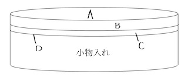
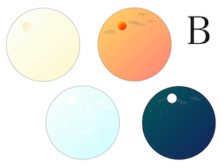
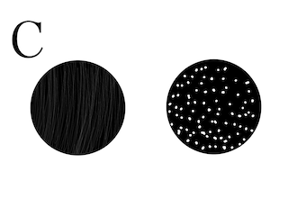
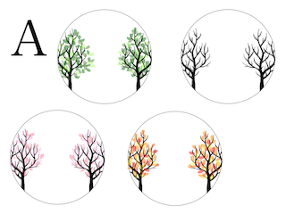
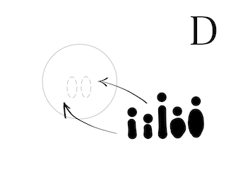

【7月ワーク】
小物入れ
とりあえず、いろいろ考えてみて全くアイデアが浮かばなかったので
手始めに二人だけの思い出になるようなアイテムの制作にとりかかってみました。
コンセプトは「瞬間を閉じ込める二人だけの小物入れ」
まあ、よくわからんと思うので、イラストとCADでイメージ画像を作成しました。
機能自体は至って普通の小物入れなのですが・・・見た目が超可愛い！
三層になっていて、それぞれ好きなパーツを選んで一つのシーンを作り上げます

一層目は「朝」「昼」「夕方」「夜」をイメージした透明カバー
これを被せることで透けているため、下の層の背景などに干渉せず表現される。

二層目は、天気をイメージした「雨」「雪」必要であればはめることができる。※透明

三層目は、四季をイメージした「春」「夏」「秋」「冬」

四層目は、二人をイメージしたシルエットを組み合わせることができる。

二人が出会った場所、プロポーズした場所、、、、
二人だけの特別な瞬間を閉じ込めるような作品に、、、
でも、正直まだイマイチだしパッとしない感じなので
これをこれからどうやってブラッシュアップしていくかが鍵だと思います。
なぜか、CADの画像がキャプチャーできないので暫しお待ちを・・・